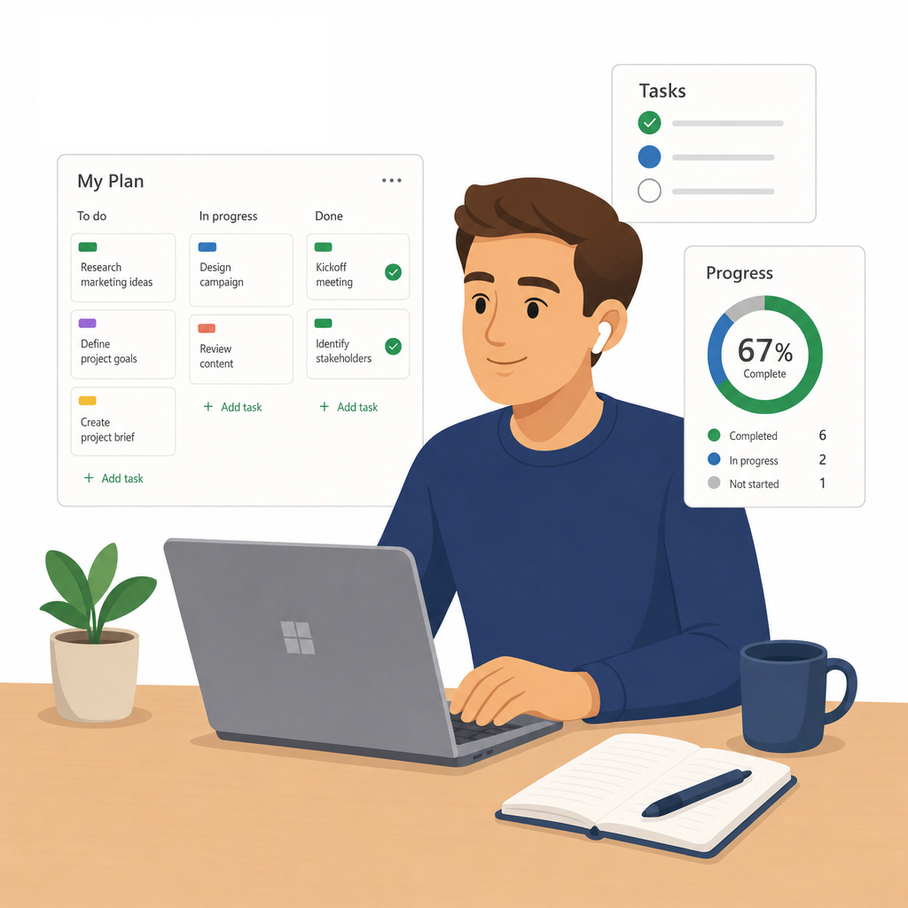

← All Apps

Planner
Give your teams a simple, visual way to manage work — from daily tasks to multi-team projects — all connected to Teams and the rest of M365.
Book This Session →Give your teams a simple, visual way to manage work — from daily tasks to multi-team projects — all connected to Teams and the rest of M365.
Book This Session →Microsoft Planner is M365's visual task-management tool — a shared board where teams can plan, assign and track work across buckets, schedules and timelines. The new Planner also unifies To Do, Project for the Web and Loop tasks, so personal, team and plan-level work all live in one view.
It's best used for team projects, recurring operations, campaign planning, onboarding checklists and any work that benefits from a simple, visual view of who's doing what. Project managers, team leads, marketing, HR, operations and cross-functional teams benefit most. Planner solves the frequent problem of work being tracked in private to-do lists that managers can't see — giving the whole team a single, shared view of progress, priorities and blockers without the overhead of a full project-management platform.

A focused session designed to build real-world skills fast.
What the new Microsoft Planner is and how it unifies tasks across M365 into a single view. We navigate the app — My Day, My Tasks, My Plans and Favourites — and use My Day and My Tasks to manage your own daily workload before touching team plans.
Creating and setting up a plan from scratch — naming, privacy and members — then organising work into buckets that reflect your phases, categories or workflows. We create tasks with a title, assignee, due date, priority and status so the board reflects real work from day one.
Making every task self-explanatory with notes, checklists, attachments, comments and @mentions. We assign multiple people to shared tasks and apply colour-coded labels so anyone can read the board at a glance.
Seeing the same plan four ways: Board view grouped by bucket, assignee, priority or progress, List and Grid view for inline editing and bulk updates, Schedule view for tasks on a calendar, and Charts view for plan health and workload distribution. We finish with filtering and grouping across views, plus the notifications that keep everyone on top of assignments, due dates and plan updates.
Bringing Planner to where the team already works — adding it as a tab in a Teams channel and seeing assigned tasks appear in Microsoft To Do. We export a plan to Excel for reporting and close with plan hygiene: naming conventions, regular reviews and archiving completed plans.